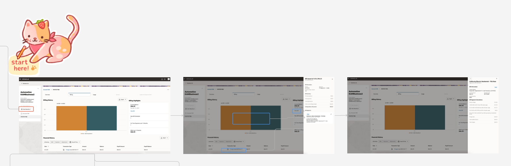
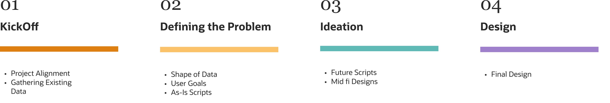
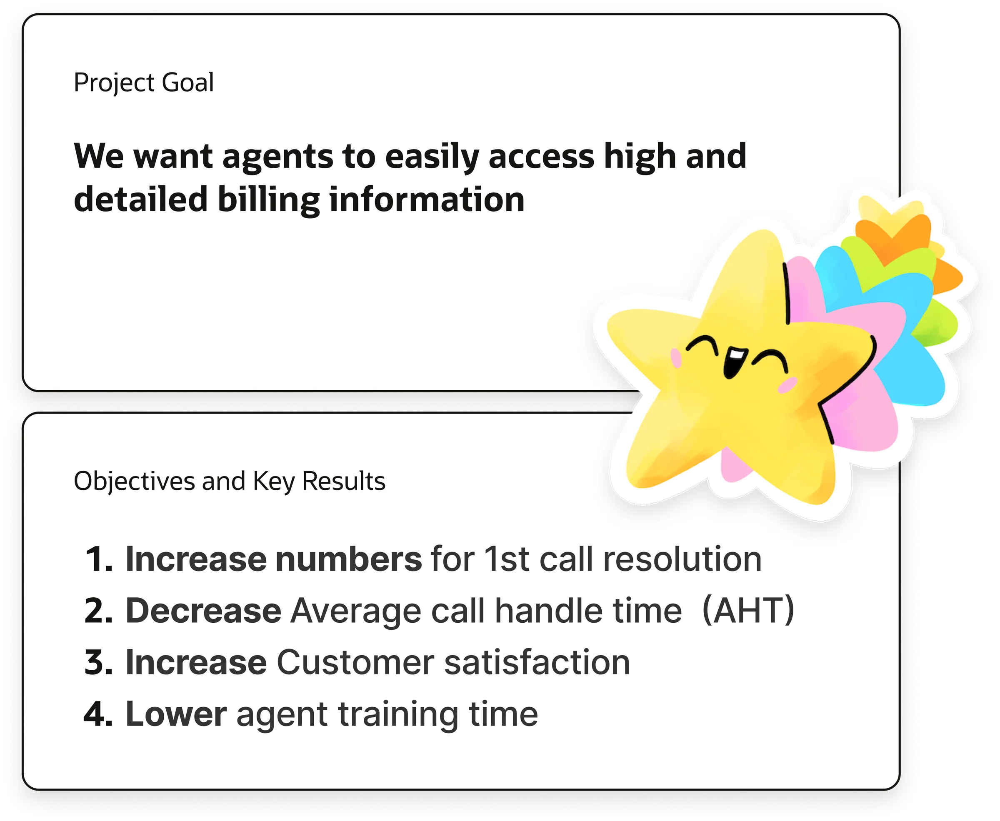
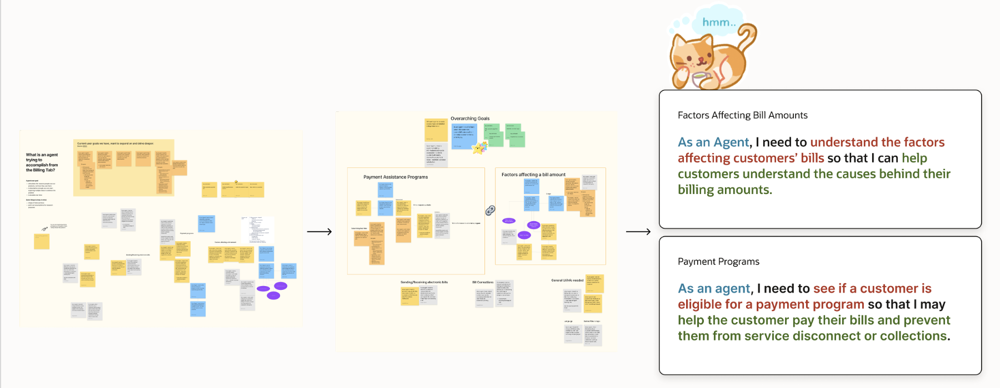
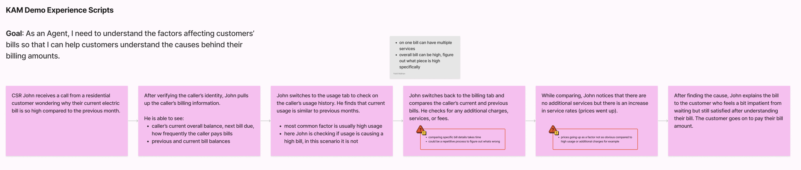
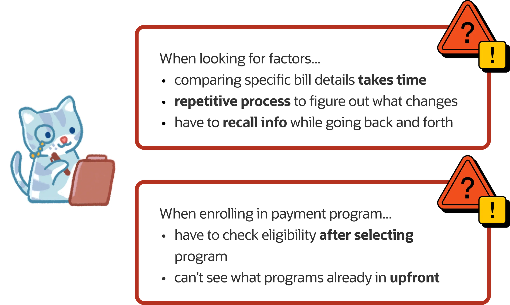
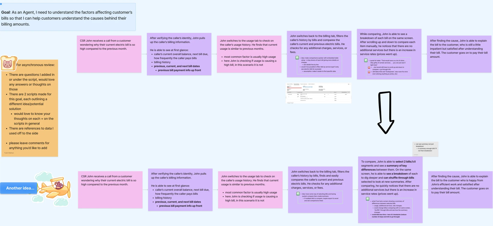
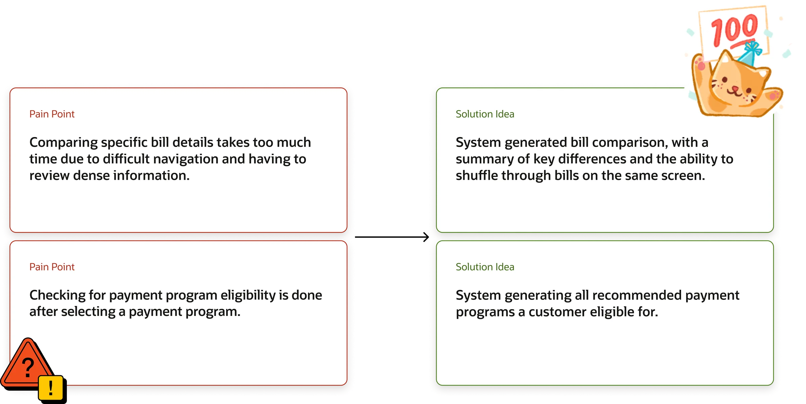
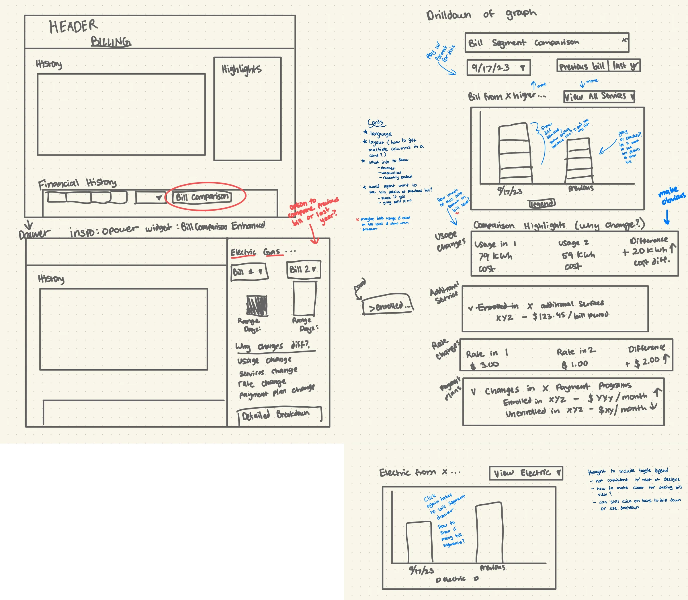
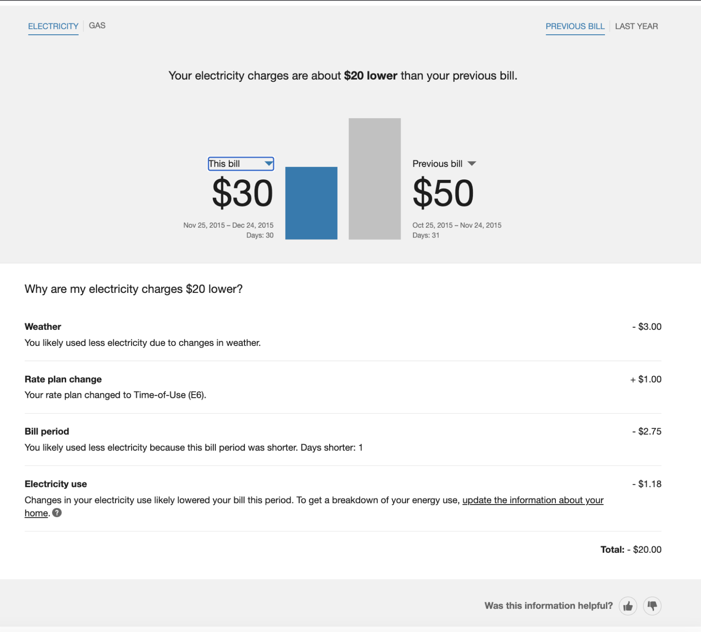

Enahncing usability for residential agents accessing customer billing information.
Design Team
Nancy Lam, Senior UX Designer
Andrhey Palos, Senior UX Designer
Ashley Vallandingham, Principal UX Designer
Tools
Figma
FigJam
Timeline
Summer 2023 - 8 weeks
Overview
At Oracle, I was part of the Energy & Water GBU designing for the Customer Experience for
Utilities (CX4U) - Residential Call Center Agent Experience. This summer, I redesigned the billing tab for the
Agent experience, enabling access to key customer utility bill
data, such as bill amounts for each utility (electric, gas, water, etc.), current balance owed, and upcoming
bill schedules. My
role was to research and design innovative ways to update the system for residential agents.
Notable Definitions
Residential Agents = handles incoming/outgoing calls for residential
customers
regarding electric/water/gas use and bills.
KAM (Key Account Manager) = work with a company + their biggest or
most important customers.
The Problem
After thorough research, I found a major issue for agents
trying to find and understand factors affecting billing amounts in multiple bills. The current process required
a repetitive, lengthy process of comparing individual bills without a consolidated view, leading to wasted time
and effort. Another problem was the lengthy process agents went through to check if customers were eligible for
any payment programs to help with their utility bills. However, due to time constraints, I had to shift focus
away from this issue in my design solutions.
"As an agent, I need to learn about a customer's current bill status so that I can help a
customer know what to pay."

*An overview of the
agent
billing process
The Solution
To simplify bill comparisons, I proposed a system that allows agents
to compare two bills side-by-side on one screen, with key differences highlighted and an option to shuffle
between bills from different dates.
Process Overview
Following the Redwood Design Process
This project was my first experience following a structured design process outside of
class projects, providing a valuable learning opportunity. After initial kickoff calls to align project
goals and gather existing data, I conducted sessions to create user goals, which helped define the problem
space and better understand agents and their objectives. I then developed "as-is" scripts to analyze the
current flow of billing-related inquiries. With a clearer understanding of the problem and pain points, I
created future scripts to brainstorm potential solutions and rough ideas before starting the design phase.
Throughout each step, I collaborated closely with the design team and stakeholders to gather feedback,
brainstorm, and iterate on ideas.

01. Project Kickoff
Through kickoff calls with stakeholders, we decided to focus on
improving agent access to
billing information - aligning with objectives to enhance overall user efficiency and accessibility.

02. User Goals
To define the problem space, I hosted user goal sessions to understand agent needs
regarding the billing tab and outline common goals. This was my first meeting I led which was nerve-racking, but
I prepared thoroughly by reviewing existing information on agent demographics and higher-level user goals.
Organizing this information in a kickoff FigJam file provided the team with a clear review and focus,
facilitating the creation of user goals, and making discussions more efficient.
I consolidated numerous goals into two main categories—factors
affecting billing amounts and payment programs—and used them to guide the analysis of current workflows and
identify pain points.

03. As-Is Scripts
I started by reviewing demo versions of the KAM billing designs and prior agent experiences
the redesign would be based off of. After mapping out their flow and functionalities through screenshots, I
drafted as-is scripts incorporating insights from prior interviews and the user goals sessions to identify pain
points and relevant scenarios. Through iterations and feedback, we found issues such as difficulty in comparing
bills and lengthy payment program eligibility checks.

The scripts provided a clear understanding of current flows and pain points to focus on for
future scripts/design ideation.

04. Future Scripts
With a clearer understanding of the issues, the ideation phase began with future scripts
aimed at addressing defined pain points. One key focus was improving bill comparison, as agents found the
current process frustrating and time-consuming. I proposed a solution where agents could compare two bills
side-by-side on a single screen, with a highlights section outlining key differences and the ability to switch
between bills for quick reference. For the second goal of simplifying payment program enrollment, I initially
considered displaying only eligible plans but prioritized refining the bill comparison feature due to time
constraints.

The outcome was an innovative concept for bill comparison that received positive feedback
from the team. They expressed enthusiasm about its potential application beyond the Agent 2.0 experience,
suggesting it could be adapted for use in other contexts like KAM.

Having a clear solution in mind motivated the next step:
developing designs to visualize this
feature.
05. Design Process
The design process began with inspiration from existing widgets from Oracle, adapted to
better suit the specific information needs of agents. I sketched out a basic layout of where this feature would
live and how it would function. Using Redwood components, I iterated through several design phases, gathering
feedback to refine the feature. This involved highlighting essential components and determining what information
was necessary or redundant for the agents' workflow.

Sketches for Billing Comparison

Widget inspiration
06. Final Design
The final iteration lies within the financial history table as a “Compare Bill” button
which opens a drawer with the selected bill from the existing financial history table, allowing comparison
with
the previous bill or same bill from the previous year—a concept retained from the widget's design. The
interface
includes a segmented graph displaying charge differences from the selected timeframe, and comparison
highlights
focusing on rate changes, service additions, and payment plan changes. Users can drill down into specific
service types via dropdown or graph interaction, consistent with existing interactions across the page,
revealing detailed billing segments for deeper analysis.
This solution aims to enhance usability and efficiency while integrating with existing
workflows and offering potential for future expansion.
Reflection
Learning Curve.
This was my first project I worked on during my time at Oracle which came with a learning
curve. Starting with minimal knowledge, I relied on introductory meetings and continuously asking questions to
understand the users and navigate terminology like OKRs, KPIs, etc. Familiarizing myself with Redwood components
and systems also took time, but having a supportive team always willing to help ensured I had the resources
needed to succeed.
Navigating Time.
Time constraints were another hurdle, as I began this project four weeks into my 12
week internship. This limited timeframe sometimes left me feeling rushed, wishing for more exploration in
potential solutions, but despite this I'm proud of the progress made.
Design as a Process.
One of the most significant takeaways was understanding design as a structured process.
Unlike my previous internships focused on iterative design, this experience emphasized problem definition
and user understanding as important steps before ideation. This created a solid foundation with data and
discussion about current workflows, user goals, and specific problems, which in turn made designing the
final feature much faster and with less to fix.